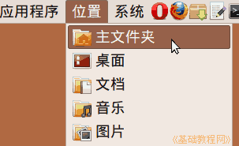

Ubuntu/GNOME 桌面程序指南
作者：TeliuTe 来源：基础教程网
四十七、管理书签 返回目录 下一课通过书签可以很方便地打开文件夹；
1、管理书签
1）点菜单“位置 - 主文件夹”，打开文件夹窗口；

2）打开主文件夹窗口，里面包含几个默认的书签文件夹，桌面、文档、音乐、图片和视频等；
3）点菜单“书签 - 编辑书签”打开书签管理窗口，这儿也可以添加书签；
4）在出来的窗口中，可以修改书签的名称、位置等，还可以删除它；

5）在应用程序的“打开”文件对话框左下角，也可以添加书签；
6）添加好的书签会出现在“位置”菜单下，和打开对话框左侧的位置栏下面；
本节学习了管理书签的基础知识，如果你成功地完成了练习，请继续学习下一课内容；
本教程由86团学校TeliuTe制作|著作权所有
基础教程网：http://teliute.org/
美丽的校园……
转载和引用本站内容，请保留版权信息和本站链接。